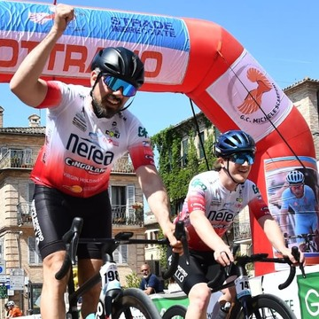

Weekend
Non ci sono scuse.
Carico le previsioni…
Carico le previsioni…
Carico le previsioni…
Previsioni: Open-Meteo.com (CC BY 4.0), lette a ogni apertura. Allerte: Meteoalarm (Aeronautica Militare), non sono gli avvisi della Protezione Civile. Giri: le tue attività Strava nelle Marche, senza il primo e l'ultimo km. Il consiglio sceglie da solo orario e giro: per ogni giro il meteo è letto ogni 10 km circa, ora per ora, e conta il punto peggiore; il rientro deve essere prima del tramonto. Lo stato delle strade è una stima dalla pioggia prevista. Il radar mostra la previsione, non la pioggia in tempo reale. Controlla sempre il bollettino prima di uscire.